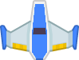
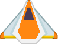
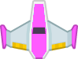
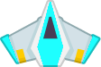
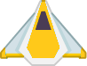
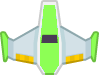

Schmeckeldorf
Patient marksman. Lock-on builds while the Core sits in the attack window.
- Hull 13
- Shields 5
- Attack dice 2
Targeting Lock: +1 attack die for each consecutive turn with the target in your attack arc (max +3).
Keystones · pick one per run
- Overwatch Fire — At max lock, fire a volley at the nearest enemy in your arc during the enemy phase, before they have a chance to respond. Rank II: Shoots two volleys.
- Pin Down — At max lock, every enemy in your arc and range loses its turn entirely. Rank II: Pin Down works from lock at 2.
- Recoil Rail — Every volley that hits shoves you 80px straight back from target. Turn RECOIL off when you'd rather stay put. Rank II: The target is shoved 80px the other way too.
- Anchor & Launch — Coast and your ship stops, building lock twice as fast. The next move launches at full throttle and can turn without penalty. Rank II: While anchored, your firing range is doubled.

IMPACTO
Brawler. Likes it up close and personal.
- Hull 8
- Shields 3
- Attack dice 3
Firing Solution: +1 attack die per turn within 240px of your target. At +2 or more, gain Evades as well.
Keystones · pick one per run
- Battering Ram — Ramming an enemy costs you no hull and hits it for 2, 4 or 6 based on speed. If that destroys the enemy, you fly on through. Rank II: Ramming hits for 3, 6 or 9.
- Dogleg — Your move adds a bend of up to 90° in PLAN and the last 40% of the move turns that direction for 1 stress. Rank II: The bend can be any angle, stress free.
- Shockwave Brake — Losing 150 or more speed in one move blasts everything within 150px for 2. Rank II: The blast deals 4 and reaches 200px.
- Grapple Hook — A hit hooks the enemy or rock (a kill hooks its wreck for 2 turns). In PLAN you can choose REEL IN instead of your move: you fly straight there and ram whatever's left for 2, 4 or 6 by your speed, taking no damage. Rank II: A hooked enemy cannot shoot.

SpooderMoon
Precision alignment and speed.
- Hull 10
- Shields 4
- Attack dice 2
Precision Lock: With velocity and facing within 30° of each other, attacks hit on 8+.
Keystones · pick one per run
- Rail Shot — A Precision shot that hits passes through everything on its line, dealing its full damange. Rank II: Everything behind the first target takes 2 additional hits.
- Strafe Run — With Precision up, every rock and enemy your move passes within 80px of takes a shot at half your dice. Rank II: Strafe Run shoots with your full dice.
- Slipstream — A Precision kill gives you a charge. Rank II: Any kill gives the charge.
- Pinball — Rocks and the board edge bounce you off retaining speed and dealing no damage. Precision is retained after a bounce. Rank II: Each rock you bounce off suffers 2 damage.

LSP
Slow and steady. Surplus shields become harvest power.
- Hull 14
- Shields 7
- Attack dice 1
Harvest Conversion: Each shield above max is +1 harvest die. Overload costs 2 energy.
Keystones · pick one per run
- Shield Lance — A charged shot dumps all your shields into it granting +1 automatic hit per shield. Rank II: Each shield dumped is 2 automatic hits.
- Corona Diver — Radiation charges your shields instead of draining them. Rank II: Radiation charges twice as many shields.
- Plough — While your shields are over half, hitting a rock costs 1 shield and destroys the rock. Rank II: Every shield you hold can plough a rock.
- Overflow Burst — Shields you gain past your max explode dealing 1 damage to everything within 150px. Rank II: The burst deals 2 per shield and reaches 200px.

Axemodeus
Cool and calculated.
- Hull 10
- Shields 5
- Attack dice 2
Calculated Strike: Hitting on consecutive turns from the same arc zone grants +1 die (max 3). Resets when you switch arcs.
Keystones · pick one per run
- Double Down — At max streak, a shot that hits fires a second full volley at the nearest target in your arc. Rank II: The second volley rolls 2 extra dice.
- Hot Hand — At max streak, a shot that hits fires repeatedly until a volley misses (up to 6). Rank II: Hot Hand starts one streak below max.
- Cash Out — A charged shot spends your whole streak granting 2 automatic hits per stack. Rank II: Each streak stack is 3 automatic hits.
- Insider Trading — Your next attack roll is shown under your ship before you fly. When you attack, use it or roll fresh. Rank II: The lowest die of the roll shown always becomes a nat 20.

Unlocks with progress- Hull 9
- Shields 4
- Attack dice 3
Rule Bender: May fire outside the attack arc once per turn; misses deal 1 self damage.
Keystones · pick one per run
- Phase Bend — Each turn you pass through the first rock or enemy in your path for +1 stress instead of crashing. Rank II: You pass through the first two obstacles each turn.
- Hijack — An enemy hit from outside your arc is yours next turn (kill it and the nearest other enemy within 300px is). In PLAN, point where it flies or HOLD it. It doesn't shoot, and flown into a rock, both take 2. Rank II: You steer it for two turns.
- Blink — A hit from outside arc leaves a blink marker for 2 turns. During PLAN, select BLINK to jump to the marker, then make a move. Rank II: Blinking also sets your evade to 2.
- Decoy — A shot from outside your arc that hits drops a decoy where you are: enemies within 320px of it waste their next turn. Rank II: The decoy draws enemies within 500px.

BlueJello
Methodical researcher. Gets more efficient the longer the fight runs.
- Hull 11
- Shields 6
- Attack dice 2
Prior Research: +1 harvest die on turn 5, +2 on turn 10, +3 on turn 15. Overload gets cheaper as the star fight goes on.
Keystones · pick one per run
- Chain Overload — Overload also emminates a damaging pulse from your ship, damaging every enemy and rock within 200px. Rank II: The discharge deals double damage and reaches 300px.
- Rock Refinery — Destroying a rock within 150px rolls 3 harvest dice, plus your bonus harvest dice. Rank II: Works out to 300px and rolls 2 more dice.
- Probe — Harvesting leaves a probe behind. On turns you don't harvest, it rolls the zone's base dice for you. Rank II: The probe harvests every turn, even when you do.
- Critical Mass — Overload spends up to 9 extra energy (never your last 10) and deals 1 damage per 3 spent, ignoring the per-turn limit. Rank II: 1 damage per 2 energy.
Bruce
Commander. Reads the board and adapts.
- Hull 11
- Shields 5
- Attack dice 2
Command Presence: +1 attack die for each different arc fired from in a rolling 3 turns (max 3).
Keystones · pick one per run
- Full Spread — A hit also fires at up to 2 other targets in arc with a third of your attack dice. Enemies first, then rocks. Rank II: Full Spread rolls half your dice.
- Broadside — A shot that hits also fires a full volley at the nearest target outside your arc. Rank II: Broadside fires at the two nearest targets outside your arc.
- Pivot Fire — The turn after you shoot, you can turn any amount, with no speed limit on turning and no turning stress. Rank II: The free turn no longer needs a shot first.
- Wing Drone — A drone fires half your dice at the nearest enemy outside your arc when the enemy phase starts. Rank II: The drone fires your full dice.
Keystones are new and still being balanced, so names and numbers may change.